Rise of Angmar
THE FOUNDING OF ANGMAR
LAYOUT
The board represents an Arnor stronghold in the northern reaches of Rhudaur. The board should have plenty of buildings on it, as well as the odd tree and bush dotted around. The largest building should be placed in the center of the board.
STARTING POSITIONS
The Good player deploys their force within 6" of the center of the board. The Evil player then deploys their force within 12" of the eastern board edge.
OBJECTIVES
The Witch-king has commanded his Orcs to drive the Arnor forces from the stronghold, and they will need to slay the Arnor Captains in order to achieve this. The game lasts for 12 turns. The Good side wins if there are at least two Captains of Arnor alive at the end of the game. The Evil side wins immediately if all Captains of Arnor have been slain. Any other result is a draw.
SPECIAL RULES
- Legions of the Witch-king
Whenever an Evil Warrior model is slain, keep them to one side. At the end of each Evil Move phase, roll a D6 for each model kept aside in this manner. On a 4+, that model may enter the board from the eastern board edge or the center of either the northern or southern board edges.
- Rising Power
The Witch-king increases his Attacks to 2 for this Scenario.
- Hold the Line
Good models may not willingly move further than 12" away from the center of the board. If a Good model finds itself further than 12" from the center of the board at the start of its Move phase, it must try to move back within 12" if possible.
- Unknown Attackers
Arnor models do not have the Hatred (Angmar) special rule in this Scenario.
PARTICIPANTS
Good: 3 Captains of Arnor; 24 Warriors of Arnor; 12 Rangers of Arnor.
Evil: The Witch-king on horse with Morgul Blade, 3 Might, 15 Will, and 3 Fate; 2 Angmar Orc Captains with shield; 36 Angmar Orc Warriors: 12 with shield, 12 with spear, 6 with Orc bow, 6 with two-handed weapon; 12 Angmar Warg Riders: 4 with shield, 4 with throwing spears, 4 with Orc bow.
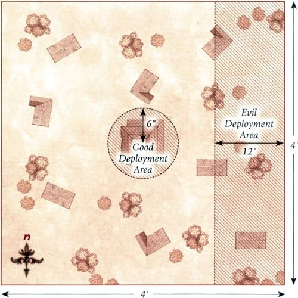
ASSAULT ON RIVENDELL
LAYOUT
The board represents the outskirts of Rivendell, and, as such, should have a few small buildings within 12" of the southern board edge. The rest of the board should be littered with trees, hedges, and rocky outcrops.
STARTING POSITIONS
The Good player deploys their force within 12" of the southern board edge. The Evil player then deploys their force within 24" of the northern board edge.
OBJECTIVES
The Elves must weather the onslaught of the Angmar forces if they are to prevent them from taking Rivendell, and must hold out long enough for reinforcements to arrive. The game lasts for 12 turns, at which point Glorfindel will arrive and the forces of Angmar will be driven back. The Good player wins if they have at least 7 models left alive at the end of the game. The Evil player wins if they can kill enough enemy models to prevent this.
SPECIAL RULES
- The Master of Rivendell
If Elrond is slain, the Evil player immediately wins.
- To War!
Evil Hero models may declare 1 Heroic March each turn without reducing their own store of Might.
- Protection of Imladris
Elrond may not cast the Wrath of Bruinen Magical Power in this Scenario.
PARTICIPANTS
Good: Elrond, Master of Rivendell with heavy armour; Erestor; 25 High Elf Warriors: 8 with spear & shield, 8 with Elf bow, 8 with no additional equipment, 1 with banner.
Evil: 2 Angmar Orc Captains with shield; Captain of Carn Dum; 25 Angmar Orc Warriors: 8 with shield, 8 with spear, 4 with Orc bow, 4 with two-handed weapon, 1 with banner; 12 Warriors of Carn Dum: 6 with no additional equipment, 6 with spear; 6 Angmar Warg Riders: 2 with shield, 2 with throwing spears, 2 with Orc bow.
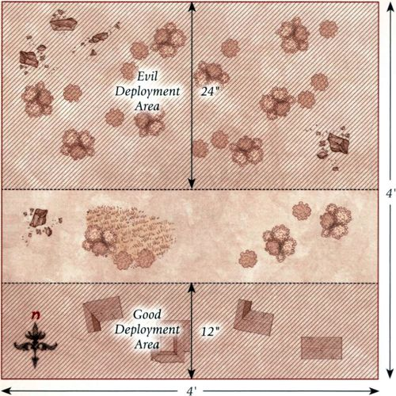
WAR BEGINS
LAYOUT
The board represents an Arnor stronghold within the Weather Hills. The board should have plenty of buildings on it, though none may be within 12" of the eastern board edge. The area within 12" of the eastern board edge should be lined with trees, bushes, and hedges.
STARTING POSITIONS
The Good player deploys their force between 12" and 24" of the western board edge. The Evil player then deploys their force within 12" of the eastern board edge.
OBJECTIVES
With Arnor now at open war, King Argeleb has come to lead his people against the threat of Angmar, making him a priority target for the Angmar forces. The game lasts until the end of a turn in which either side has completed their objective. The Good side wins if they can reduce the Evil force to 25% of its starting numbers (10 models). The Evil side wins if Argeleb is slain. If both sides achieve their objective in the same turn, the game is a draw.
SPECIAL RULES
- The King of Arnor
Argeleb must re-roll failed To Wound rolls when making Strikes. Additionally, Argeleb gains the Arnor keyword.
- The Hill-men
Carn Dum models gain the Hatred (Arnor) special rule.
- Unknown Attackers
Arnor models do not have the Hatred (Angmar) special rule in this Scenario.
PARTICIPANTS
Good: Argeleb (King of Men with heavy armour and shield); Captain of Arnor; 16 Warriors of Arnor; 1 Warrior of Arnor with banner; 8 Rangers of Arnor.
Evil: Angmar Orc Captain with shield; 2 Captains of Carn Dum; 13 Angmar Orc Warriors: 4 with shield, 4 with spear, 2 with Orc bow, 2 with two-handed weapon, 1 with banner; 24 Warriors of Carn Dum: 12 with no additional equipment, 12 with spear.
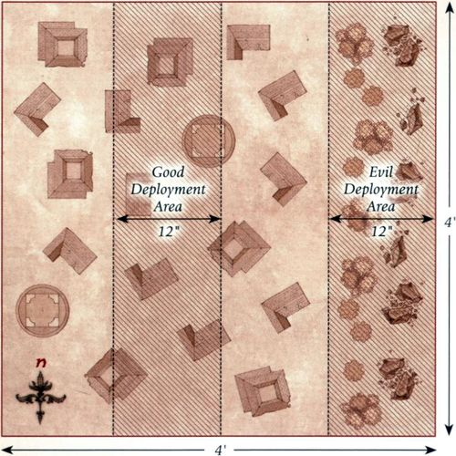
FALL OF RHUDAUR
LAYOUT
The board represents an area of Rhudaur on the edges of one of the many fortifications ruined by the assault of the Angmar army. As such, the board should have a selection of ruins, as well as a few trees, bushes, and hedges dotted around, providing plenty of cover.
STARTING POSITIONS
The Good player deploys their models within 6" of the center of the board. The Evil player then deploys their models anywhere on the board at least 6" away from any Good model.
OBJECTIVES
Those that refused to bow to the Witch-king must flee the lands of Rhudaur if they wish to live. The game lasts until the end of a turn in which one side completes their objective. The Good side wins if five or more Good models can escape the board via any board edge. The Evil player wins if they can kill enough Good models to make it impossible for the Good side to win.
SPECIAL RULES
- Hope is Lost
Evil models cause Terror in this Scenario.
- Escape Through the Trees
Good models gain the Woodland Creature special rule.
PARTICIPANTS
Good: 3 Rangers of the North; 3 Dúnedain; 12 Rangers of Arnor: 4 with spear, 8 with no additional equipment.
Evil: 2 Captains of Carn Dum; 24 Warriors of Carn Dum: 12 with no additional equipment, 12 with spear.
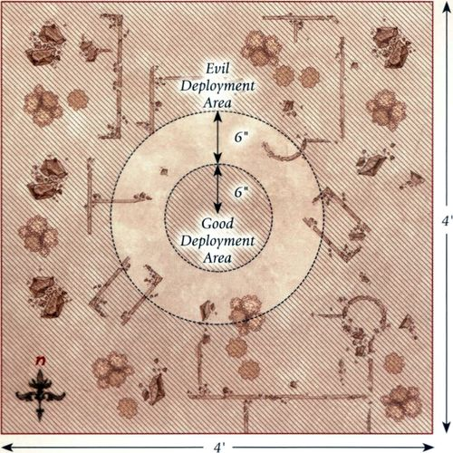
DEFENCE OF TYRN GORTHAD
LAYOUT
The board represents an area near one of the old burial grounds in Tyrn Gorthad. There should be a selection of mounds within 12" of the center of the board. The rest of the board should be dotted with trees, bushes, and hedges, providing plenty of cover.
STARTING POSITIONS
The Good player deploys their models within 6" of the center of the board. The Evil player then splits their force into four quarters as equally as possible, and then deploys each quarter within 6" of the center of a different board edge.
OBJECTIVES
The Rangers are making a desperate stand within Tyrn Gorthad and must drive the Orcs back if they are to survive. The game lasts until the end of any turn in which one player completes their objective. The Good player wins if they can reduce the Evil force to 25% or less of its starting numbers (8 models). The Evil player wins if they can kill all of the Dúnedain and Rangers of the North. If both players achieve their objective in the same turn, the game is a draw.
SPECIAL RULES
- Stand your Ground!
Good models may not voluntarily move more than 6" away from the center of the board. If a Good model finds itself outside of 6", then it must move back within range as quickly as possible.
- Twilight
Models that target an enemy model with a shooting attack that is more than 12" away suffer a -1 penalty to their Shoot value.
- A Desperate Fight
Rangers of the North have 2 Attacks in this Scenario.
PARTICIPANTS
Good: 3 Rangers of the North; 3 Dúnedain; 12 Rangers of Arnor: 4 with spear, 8 with no additional equipment.
Evil: 2 Angmar Orc Captains with shield; 24 Angmar Orc Warriors: 8 with shield, 8 with spear, 4 with two-handed weapon, 4 with Orc bow; 6 Wild Wargs.
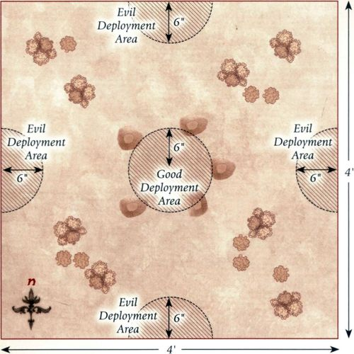
FALL OF AMON SUL
LAYOUT
The board represents the tower of Amon Sul and the surrounding area. The area within 6" of the centre of the board is the tower. The rest of the board should be relatively clear, with the odd tree, hedge, and bush dotted around.
STARTING POSITIONS
The Good player deploys their force within 3" of the tower of Amon Sul. The Evil player then deploys their force anywhere on the board at least 12" away from any Good model.
OBJECTIVES
Arveleg has gathered his forces to defend Amon Sul against the Witch-king, who has come to destroy the tower and claim the Palantir that lies within.
The game lasts for 12 turns. The Good player wins if the Palantir leaves the board via any board edge. The Evil player wins if Arveleg has been slain and the Palantir is not in the possession of a Good model. Any other result is a draw.
SPECIAL RULES
- The Tower of Amon Sul
Models cannot enter, or be deployed within, the tower of Amon Sul.
- The Palantir
At the start of the game, the Good player secretly notes down one of their models (with the exception of Arveleg); this is the model that is carrying the Palantir. The Palantir is a Light Object that can never be passed. If the model carrying the Palantir is slain, then the Palantir is dropped rather than being immediately claimed. At this point the location of the Palantir becomes known to the Evil player. If the model carrying the Palantir escapes the board, then the game immediately ends.
- Defiance of the King
Arveleg has the Resistant to Magic special rule, and may re-roll failed Fate rolls. Additionally, Arveleg gains the Arnor keyword.
- Rising Power
The Witch-king increases his Attacks to 2 for this Scenario.
PARTICIPANTS
Good: Arveleg (King of Men with heavy armour and shield); 2 Captains of Arnor; 24 Warriors of Arnor; 1 Warrior of Arnor with banner; 12 Rangers of Arnor: 4 with spear, 8 with no additional equipment.
Evil: The Witch-king of Angmar on horse with 3 Might, 15 Will, and 3 Fate; Angmar Orc Captain with shield; Captain of Carn Dum; 25 Angmar Orc Warriors: 8 with shield, 8 with spear, 4 with two-handed weapon, 4 with Orc bow, 1 with banner; 12 Warriors of Carn Dum: 6 with no additional equipment, 6 with spear; 12 Angmar Warg Riders: 4 with shield, 4 with throwing spears, 4 with Orc bow.
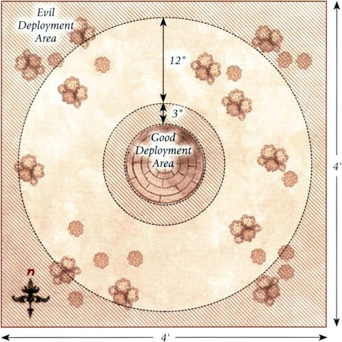
DEFENCE OF FORNOST
LAYOUT
The board represents the walls of the city of Fornost. The walls are 3" wide and run along the western board edge. The rest of the board should be relatively barren with the odd tree, bush, or hedge dotted around.
STARTING POSITIONS
The Evil player deploys their models within 12" of the eastern board edge. The Good player deploys their models within 3" of the walls of Fornost.
OBJECTIVES
The forces of Arnor are trying to defend Fornost against the Witch-king's army, who intend to assail the city and claim it for their master.
The game lasts until the end of a turn in which one side has completed their objective. The Good side wins if they can reduce the Evil side to 25% or less of their starting numbers (10 models). The Evil side wins if, at the end of any turn, there are 10 or more Evil models on the walls.
SPECIAL RULES
- Ruthless Attackers
Evil models that are fighting from a ladder do not treat the battlements as a barrier if they win the fight; they will Strike as normal.
- The King is Dead
Evil models that are on the walls cause Terror.
PARTICIPANTS
Good: 2 Captains of Arnor; 16 Warriors of Arnor; 8 Rangers of Arnor.
Evil: Angmar Orc Captain with shield; 2 Captains of Carn Dum; 13 Angmar Orc Warriors: 4 with shield, 4 with spear, 2 with two-handed weapon, 2 with Orc bow, 1 with banner; 24 Warriors of Carn Dum: 12 with no additional equipment, 12 with spear; 6 siege ladders.
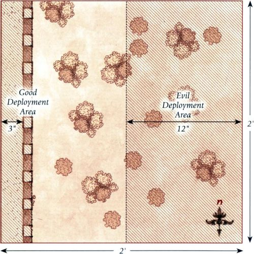
MARAUDING OF CARDOLAN
LAYOUT
The board represents the ravaged lands of Cardolan. There should be plenty of ruins across the board, as well as plenty of trees, bushes, and hedges dotted around the board.
STARTING POSITIONS
The Good player deploys the Prince of Cardolan in the center of the board, and then deploys the rest of their models within 3" of the Prince. The Evil player then deploys their models anywhere on the board at least 12" away from any Good model.
OBJECTIVES
Surrounded by Evil Men, and knowing they have come to slay him, the Prince of Cardolan must escape their ambush.
The game lasts until one side completes their objective. The Good player wins if the Prince of Cardolan can escape the board via any board edge. The Evil player wins if the Prince of Cardolan is slain.
SPECIAL RULES
- A Skilled Fighter
The Prince of Cardolan has 3 Attacks rather than 2 and has the Hatred (Angmar) special rule.
- Defend the Prince
Other Good models within 3" of the Prince of Cardolan count as being in range of a banner. If the Prince of Cardolan suffers a Wound, then the range of this special rule is increased to 6".
PARTICIPANTS
Good: Prince of Cardolan (King of Men with heavy armour); 16 Warriors of Arnor.
Evil: 2 Captains of Carn Dum; 24 Warriors of Carn Dum: 12 with no additional equipment, 12 with spear.
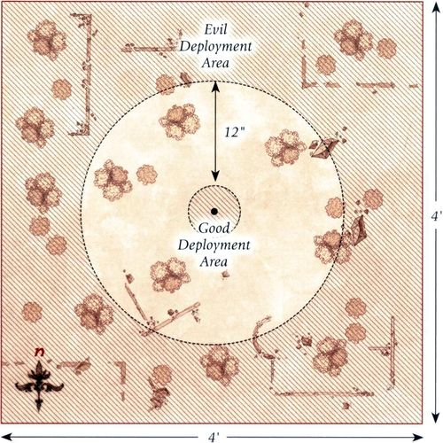
AN UNLIKELY ALLY
LAYOUT
The board represents the lands outside Fornost. There should be plenty of trees, hedges, and bushes scattered around the board, with the odd building or ruin dotted between them.
STARTING POSITIONS
The Evil player deploys their models within 12" of the western board edge. The Good player then deploys their models within 12" of the eastern board edge.
OBJECTIVES
The Elves have come to the aid of Fornost and must force the armies of Angmar to fall back to relieve the besieged city.
The game lasts until the end of a turn in which one side has completed their objective. The Good side wins if they can reduce the Evil side to 25% or less of their starting numbers (13 models). The Evil side wins if they can reduce the Good side to 25% or less of their starting numbers (7 models). If both sides achieve their objective in the same turn, the game is a draw.
SPECIAL RULES
- Seething Hatred
Evil models gain the Hatred (Elf) special rule.
- Test Their Resolve
Whenever an Evil Hero model is slain in combat, place a 25mm marker where they were slain. During the End phase, each Evil model within 3" of a marker must take a Courage test. If they fail, they flee the board and are removed as a casualty; Hero models that pass this Courage test may use Stand Fast!. Remove the marker at the end of the End phase.
PARTICIPANTS
Good: Glorfindel, Lord of the West, with Armour of Gondolin; Círdan; High Elf Captain with shield; 25 High Elf Warriors: 8 with spear and shield, 8 with Elf bow, 8 with no additional equipment, 1 with banner.
Evil: 2 Angmar Orc Captains with shield; 2 Captains of Carn Dum; 25 Angmar Orc Warriors: 8 with shield, 8 with spear, 4 with two-handed weapon, 4 with Orc bow, 1 with banner; 24 Warriors of Carn Dum: 12 with no additional equipment, 12 with spear.
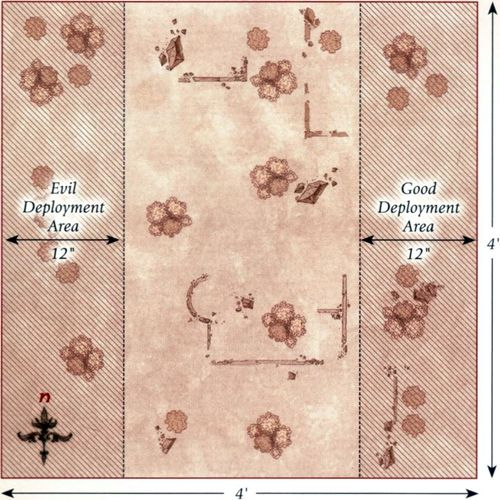
THE GREAT PLAGUE
LAYOUT
The board represents the lands of Cardolan. The board should be covered in a variety of ruins, trees, bushes, and hedges, providing a densely packed board of terrain for models to traverse around.
STARTING POSITIONS
The Good player deploys their models within 12" of the center of the southern board edge. The Evil player deploys the Spectres within 6" of the center of the northern board edge, and then splits the rest of their models into two equal halves. One half is deployed within 6" of the center of the eastern board edge, and the other is deployed within 6" of the center of the western board edge.
OBJECTIVES
The survivors of Cardolan have abandoned their homes and are now trying to reach the realm of Arthedain for safety. However, they must do so before they succumb to the Orcs, or the Great Plague.
The game lasts until one side has completed their objective. The Good player wins if three or more Good models escape the board via the northern board edge. The Evil player wins if enough Good models are slain to make it impossible for the Good player to achieve their objective.
SPECIAL RULES
- The Great Plague
From turn 2 onwards, at the start of the Move phase, roll a D6 for each model left on the board. On the roll of a 1, the Great Plague has taken hold and the model suffers a Wound. Might may not be used to influence this roll, however, Fate points may be spent as normal. Spirit models are not affected by this special rule; do not roll for them.
- Make Haste!
Good models gain the Woodland Creature and Mountain Dweller special rules.
PARTICIPANTS
Good: 3 Rangers of the North; 3 Dúnedain; 12 Rangers of Arnor: 4 with spear, 8 with no additional equipment.
Evil: 2 Angmar Orc Captains with shield; 24 Angmar Orc Warriors: 8 with shield, 8 with spear, 4 with two-handed weapon, 4 with Orc bow; 3 Dead Marsh Spectres.
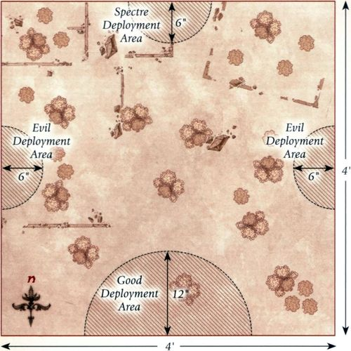
RAISING OF THE BARROW-DOWNS
LAYOUT
The board represents the Barrow-downs. There should be four barrows on the board, each one placed within 12" of a different corner of the board. There should also be plenty of trees around the edges of the board. The rest of the board should be relatively clear, with the odd hedge or bush dotted around.
STARTING POSITIONS
The Good player deploys the Dúnedain and Rangers of the North within 3" of the center of the board. The Evil player then deploys a Barrow-wight and three Spectres touching each of the barrows. Tom Bombadil is kept aside for later in the game.
OBJECTIVES
The Men of Cardolan know that if they are to survive, they must endure the spectral onslaught set upon them by the Witch-king.
The game lasts until one side has achieved their objective. The Good player wins if all Evil models are slain. The Evil player wins if they can slay all of the Dúnedain and Rangers of the North.
SPECIAL RULES
- Fog on the Barrow-downs
Man models can only see up to 6".
- The Barrow
While within 3" of a Barrow, a Barrow-wight may spend a single point of Will each turn without reducing their store of Will.
- Ho! Tom Bombadil!
From turn 3 onwards, at the end of each Good move phase, the Good player rolls a D6. On a 5+, Tom Bombadil has heard the plight of the Men of Cardolan and arrives to aid them. Tom may enter the board from any board edge via the rules for Reinforcements.
PARTICIPANTS
Good: Tom Bombadil; 6 Rangers of the North; 6 Dúnedain.
Evil: 4 Barrow-wights; 12 Dead Marsh Spectres.
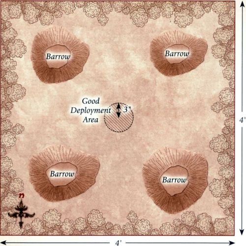
ASSAULT ON FORNOST
LAYOUT
The board represents the lands outside the city of Fornost. Along the western board edge are the walls of Fornost. The area within 12" of the eastern board edge should be lined with trees. The rest of the board should have the odd tree, hedge, and bush dotted around.
STARTING POSITIONS
The Good player deploys their force within 6" of the center of the western board edge. The Evil player deploys their force within 12" of the eastern board edge.
OBJECTIVES
Arvedui must lead his armies to ensure that the city doesn't fall, and must kill enough of the army of Carn Dum to force them to fall back.
The game lasts until the end of a turn in which one side has completed their objective. The Good player wins if they can reduce the Evil force to 25% or less of their starting numbers (13 models). The Evil player wins if they can reduce the Good force to 25% or less of their starting numbers (11 models). If both sides achieve their objective in the same turn, the game is a draw.
Whenever Arvedui suffers a Wound within 6" of Malbeth, he will ignore the Wound on a 3+ rather than a 5+.
SPECIAL RULES
- The King of Arnor
Arvedui may declare a Heroic Combat each turn without spending Might. However, if Arvedui is slain, the best result the Good player can achieve is a draw.
- Carn Dum War Chant
Once per game, after Priority has been determined, the Evil player can use this ability so long as Aldrac is still alive. Until the end of the turn, all Carn Dum models have the Terror special rule.
- Fateful Visions
Whenever Arvedui suffers a Wound within 6" of Malbeth, he will ignore the Wound on a 3+ rather than a 5+.
PARTICIPANTS
Good: Arvedui, Last King of Arnor; Argadir, Captain of Arnor; Malbeth the Seer; 24 Warriors of Arnor; 1 Warrior of Arnor with banner; 12 Rangers of Arnor: 4 with spear, 8 with no additional wargear; 6 Knights of Arnor.
Evil: Aldrac, Warlord of Carn Dum; Fraecht, Vassal of the Witch-king; Nazthak, Orc Captain; Captain of Carn Dum; 36 Warriors of Carn Dum: 18 with no additional equipment, 18 with spear; 13 Angmar Orc Warriors: 4 with shield, 4 with spear, 2 with two-handed weapon, 2 with Orc bow, 1 with banner.
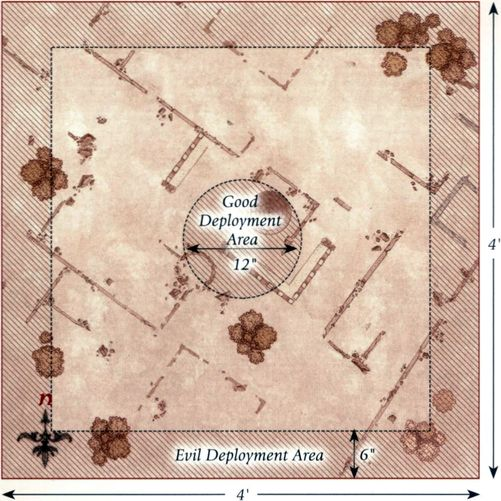
THE FALL OF ARNOR
LAYOUT
The center of the board represents the ruined palace of Fornost, whilst the remainder of the board represents the surviving ruins of the city. The board should be covered in ruins and piles of rocks towards the edges, with much more substantial buildings towards the center.
STARTING POSITIONS
The Good player deploys all of their models anywhere within 6" of the center of the board. The Evil player then deploys their models anywhere within 6" of any board edge.
OBJECTIVES
The forces of Angmar have been given a single task: to wipe out the royal lineage of Arnor and claim Fornost for the Witch-king. Arvedui must survive this onslaught if his line is to endure, for a much larger army of fouler creatures draws ever nearer.
The Evil player wins immediately if all of Arvedui, Aranarth, and Malbeth are slain. The Good player wins if the Evil force is wiped out before this can happen. Alternatively, the game is a draw if Arvedui abandons Fornost and manages to escape the board via any board edge — and if the battle is going ill, this may be a good idea!
SPECIAL RULES
- Malbeth the Seer
Whenever Arvedui suffers a Wound within 6" of Malbeth, he will ignore the Wound on a 4+ rather than a 5+.
- Arvedui's Last Stand
Arvedui has the Fearless special rule.
PARTICIPANTS
Good: Arvedui, Last King of Arnor; Malbeth the Seer; Argadir, Captain of Arnor; Aranarth, First Chieftain of the Dúnedain; Captain of Arnor; 24 Warriors of Arnor; 12 Rangers of Arnor; 6 Knights of Arnor.
Evil: Nazthak, Orc Captain; The Shadow of Rhudaur; Shade; Angmar Orc Captain with shield; Angmar Orc Shaman; Barrow-wight; 3 Dead Marsh Spectres; 24 Angmar Orcs: 8 with shield, 8 with spear, 4 with Orc bow, 4 with two-handed weapon; 5 Werewolves; 2 Hill Trolls.
FLIGHT TO THE NORTH
LAYOUT
The board represents the northern lands of Arnor. There should be plenty of ruins, trees, hedges, and other undergrowth covering the board, providing ample cover and interesting pathways across the board.
STARTING POSITIONS
The Good player deploys their force within 6" of the southern board edge. The Evil player then deploys their models touching any of the northern, eastern, or western board edges, but not within 6" of a Good model. Gulavhar is not deployed at the beginning of the game but will be available as the game progresses.
OBJECTIVES
Arvedui must escape the evil that now hunts him to ensure the Palantiri do not fall into enemy hands.
The game lasts until one force has completed their objective. The Good side wins immediately if Arvedui can escape the board via the northern board edge. The Evil side wins if they manage to reclaim the Palantiri and move them off any board edge.
SPECIAL RULES
- The Terror of Arnor
At the end of each Evil Move phase, the Evil player rolls a D6 and adds the turn number. If the total is 10 or more, then Gulavhar immediately arrives from any point on the southern board edge via the rules for Reinforcements.
- The Palantiri
At the start of the game, Arvedui is in possession of the Palantiri. This is a Light Object that cannot be passed and cannot be dropped unless the model carrying it is slain. If a model carrying the Palantiri is slain in combat, the model that slew them does not automatically gain possession of the Palantiri. Instead, it will be dropped where the model stood. If a Good model, other than Arvedui, can move the Palantiri off the board via the northern board edge, the game ends immediately and is a draw.
PARTICIPANTS
Good: Arvedui, Last King of Arnor; Captain of Arnor; 12 Warriors of Arnor; 12 Rangers of Arnor: 4 with spear, 8 with no additional equipment.
Evil: Gulavhar, the Terror of Arnor; Barrow-wight; 6 Angmar Orc Warriors: 3 with shield, 3 with Orc bow; 4 Werewolves.
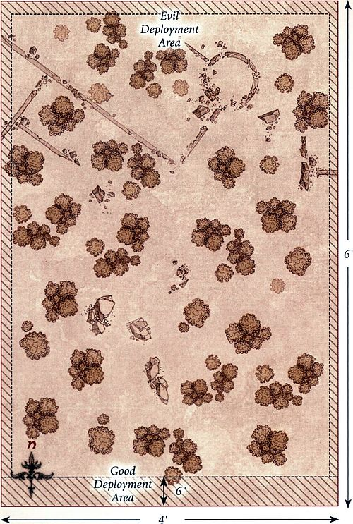
AID TO FORNOST
LAYOUT
The board represents the wooded lands between the Shire and Fornost. The board should be covered with plenty of trees, hedges, and other undergrowth to provide lots of cover.
STARTING POSITIONS
The Evil player places their models within 3" of the centerline of the board that runs from east to west. The Good player then deploys their models within 6" of the southern board edge.
OBJECTIVES
The Hobbits must make their way northwards and past the Orcs if they are to provide aid to Earnur and his forces.
The game lasts until one side has completed their objective. The Good side wins if 6 or more Hobbit models can move off the board via the northern board edge. The Evil side wins if they can kill enough Hobbit models to make it impossible for the Good player to achieve their objective.
SPECIAL RULES
- Sure-footed
Good models gain the Woodland Creature special rule.
- The Orc Pack
Evil models begin the game as Sentries as described in the main rules manual.
PARTICIPANTS
Good: 3 Rangers of the North; 12 Hobbit Archers.
Evil: Angmar Orc Captain with shield; 12 Angmar Orc Warriors: 4 with shield, 4 with spear, 2 with two-handed weapon, 2 with Orc bow.
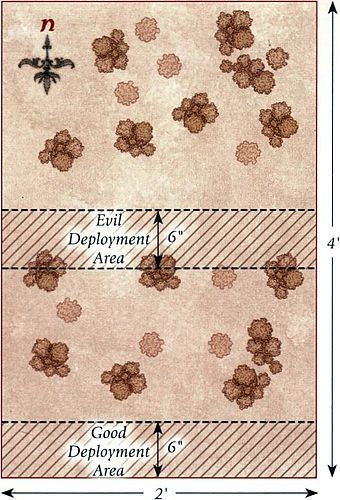
THE BATTLE OF FORNOST
LAYOUT
The board represents a section of the ruins of Fornost and the surrounding area. The north-eastern quarter of the board is the city of Fornost and should have ruined walls surrounding it with plenty of ways through. The city of Fornost itself should contain plenty of ruins. The rest of the board should be dotted with trees, hedges, rocky outcrops, and piles of rubble.
STARTING POSITIONS
The Evil player deploys their force within the north-eastern quarter of the board that makes up the city of Fornost. The Good player then deploys the Gondor contingent within 12" of the south-western corner, the Rivendell contingent within 12" of the south-eastern corner, and the Arnor contingent within 12" of the north-western corner.
OBJECTIVES
This is the final battle for Fornost. The free peoples must either wipe out the Angmar force, or die in the attempt.
The game lasts until one force is wiped out, at which point the opposing side is the winner.
SPECIAL RULES
- The Toll of Battle
In this scenario, both forces will break in the same way as if it were a Matched Play game. The rules for Broken forces can be found in the main rules manual.
- The Lord of the Nazgûl
The Witch-king of Angmar has 3 Attacks in this scenario. Additionally, while the Witch-king is alive and on the board, Evil models gain a bonus of +1 to their Courage value. However, should the Witch-king be slain or flee the board, then the best result the Evil player can achieve is a draw.
- Leaders of the Free Peoples
If Earnur, Glorfindel, Círdan, and Aranarth are all slain or have fled the board at the end of the game, the best result the Good player can achieve is a draw.
PARTICIPANTS
GOOD
Gondor: Earnur, Last King of Gondor, with armoured horse and lance; Captain of Minas Tirith with shield;
25 Warriors of Minas Tirith: 8 with shield, 8 with spear and shield, 8 with bow, 1 with banner; 6 Knights of Minas Tirith with shield.
Rivendell: Glorfindel, Lord of the West, with Asfaloth and Armour of Gondolin; Círdan; 25 High Elf Warriors: 8 with spear and shield, 8 with Elf bow, 8 with no additional equipment, 1 with banner.
Arnor: Aranarth, First Chieftain of the Dúnedain; 3 Rangers of the North; 3 Dúnedain; 12 Rangers of Arnor: 4 with spear, 8 with no additional equipment; 8 Hobbit Archers.
Evil: The Witch-king of Angmar on horse with 3 Might, 20 Will, and 3 Fate; The Tainted; The Dwimmerlaik; The Shadow of Rhudaur; Nazthak, Orc Captain; Shade; Barrow-wight; Warg Chieftain; 50 Angmar Orc Warriors: 16 with shield, 16 with spear, 8 with two-handed weapon, 8 with Orc bow, 2 with banner; 12 Wild Wargs; 6 Dead Marsh Spectres; 2 Werewolves; 2 Hill Trolls.
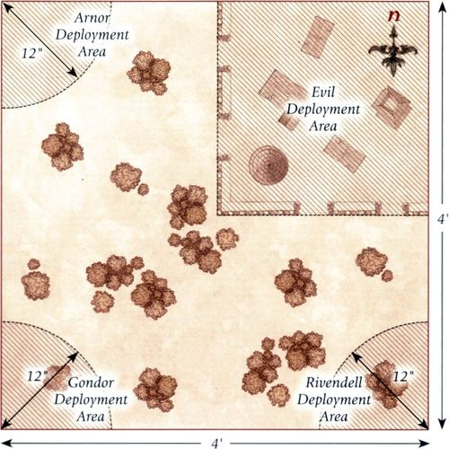
FALL OF MINAS ITHIL
LAYOUT
The board represents the inside of the fortress of Minas Ithil. The western board edge should be the walls of the fortress, with the gates in the center of the western board edge. The rest of the board should be littered with buildings, ruins, and piles of rubble, providing plenty of different pathways and cover for models to navigate. Place three Objective markers on the board. One is placed in the center of the board. The next is placed halfway between the center of the board and the north-eastern corner, and the final one is placed halfway between the center of the board and the south-eastern corner.
STARTING POSITIONS
The Good player deploys their forces within the eastern half of the board. The Evil player then deploys their forces within 12" of the center of the western board edge.
OBJECTIVES
In order to conquer Minas Ithil, the Witch-king's forces must capture key areas of the fortress. The Men of Gondor know they are hopelessly outnumbered, but if they can slay the Witch-king, his armies will flee.
The game lasts until one force has completed their objective. The Good side wins immediately if the Witch-king is slain. The Evil side wins if, at the end of any turn, they are in control of all three Objective markers.
SPECIAL RULES
- Controlling Objectives
The Evil force is considered to be controlling an Objective marker if there are at least twice as many Evil models within 3" of it as there are Good models, or if there is at least one Evil model within 3" and no Good models.
- Legions of the Witch-king
Whenever an Evil Warrior model is slain, keep it to one side. At the end of each Evil Move phase, roll a D6 for each model kept aside in this manner. On a 4+, that model may enter the board from the center of the western board edge via the rules for Reinforcements.
PARTICIPANTS
Good: 3 Captains of Minas Tirith with shield; 36 Warriors of Minas Tirith: 12 with shield, 12 with spear and shield, 12 with bow.
Evil: The Witch-king of Angmar on horse with 3 Might, 15 Will, and 3 Fate; 2 Angmar Orc Captains with shield; 36 Angmar Orc Warriors: 12 with shield, 12 with spear, 6 with two-handed weapon, 6 with Orc bow; 3 Dead Marsh Spectres.
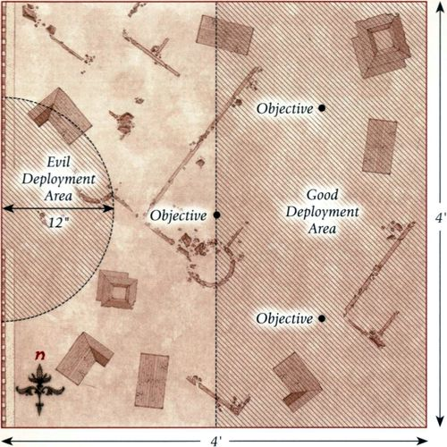
LAST SIGHTING OF EARNUR
LAYOUT
The board represents the inside of the fortress of Minas Morgul. The western board edge should be the walls of the fortress, with the gates in the center of the western board edge. The rest of the board should be littered with buildings, ruins, and piles of rubble, providing plenty of different pathways and cover for models to navigate.
STARTING POSITIONS
The Evil player places the Witch-king 12" from the center of the eastern board edge. The Good player then places their models within 6" of the center of the western board edge. The Evil player then splits the rest of their force into two equal halves and deploys one within 3" of the northern board edge and the other within 3" of the southern board edge.
OBJECTIVES
Both Earnur and the Witch-king desire revenge against the other for the events of the Battle of Fornost all those years ago, and will not cease their attack until they have their vengeance.
The game lasts until one force has completed their objective. The Good side wins immediately if the Witch-king is slain at the hands of Earnur. The Evil side wins immediately if Earnur is slain at the hands of the Witch-king.
SPECIAL RULES
- Lord of the Nazgûl
The Witch-king has a Fight value of 6 and 3 Attacks in this Scenario.
- Leave Him to Me
Evil models may not target Earnur with shooting attacks, special rules, or Magical Powers.
- A Clash of Kings
If a model, other than Earnur or the Witch-king, causes a Wound to either Earnur or the Witch-king that would cause them to be slain, after Fate points have been spent, the Wound is negated but any Fate points spent are lost.
- Death or Glory
Earnur gains the Fearless special rule in this Scenario. Additionally, the Witch-king does not give up a Will point for being involved in a combat during this Scenario.
PARTICIPANTS
Good: Earnur, Last King of Gondor, with armoured horse and lance; Captain of Minas Tirith with horse and shield; 12 Knights of Minas Tirith with shield.
Evil: The Witch-king of Angmar on horse with 3 Might, 16 Will, and 3 Fate; 2 Angmar Orc Captains with shield;
24 Angmar Orc Warriors: 8 with shield, 8 with spear, 4 with two-handed weapon, 4 with Orc bow; 6 Dead Marsh Spectres.
Designer's Notes: This Scenario is designed to recreate the final showdown between Earnur and the Witch-king. The only way to win is for one of them to slay the other in single combat, and as both are remarkable warriors, one thing is for certain — it will be an epic conclusion!
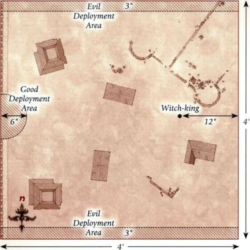
APPENDIX 1 - AMBUSH IN RHUDAUR
LAYOUT
The board represents the northern lands of Middle-earth. The board should contain a selection of ruins, as well as being densely packed with trees, hedges, and other undergrowth.
STARTING POSITIONS
The Evil player deploys their models within 12" of the center of the western board edge. The Good player then splits their force into two equal halves, one containing Arathorn and the other containing Halbarad. Arathorn's half is deployed within 6" of the northern board edge, while Halbarad's half is deployed within 6" of the southern board edge.
OBJECTIVES
When the Orcs become aware of the presence of the Dunedain, they will try to escape back to their camp. The Dunedain intend to follow the Orcs, but if too many slip through their fingers, they will lose the element of surprise.
The game lasts until the end of the turn in which one player has completed their objective. The Evil player wins if at least 8 Evil models can move off the board via the eastern board edge. The Good player wins if they can kill enough enemy models to make it impossible for the Evil player to achieve their objective.
SPECIAL RULES
- Ambush!
After both sides have deployed, but before the first turn of the game, each Good model may make a free shooting attack as if it were the Shoot phase. Might may not be used by Good models during this free shooting attack.
- The Troll
If the Hill Troll escapes the board, the best result the Good player can achieve is a draw. While the Hill Troll is still on the board, the game cannot end.
PARTICIPANTS
Good: Arathorn; Halbarad; 9 Rangers of the North; 9 Dunedain.
Evil: 2 Angmar Orc Captains with shield; 24 Angmar Orc Warriors: 8 with shield, 8 with spear, 4 with two-handed weapon, 4 with Orc bow; 1 Hill Troll.
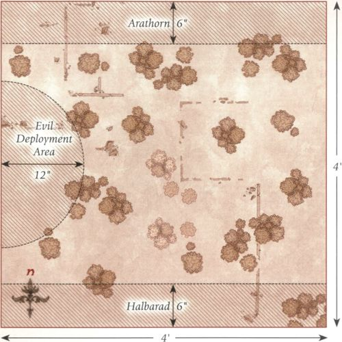
APPENDIX 2 - THE TRAP IS SPRUNG
LAYOUT
The board represents a ruined city of Arnor. The board should be covered with plenty of ruins to form the shape of the buildings that once stood, and there should be piles of rubble, trees, and rocky outcrops dotted all across the board.
STARTING POSITIONS
The Good player deploys their models within 6" of the center of the board. The Evil player then deploys their models anywhere on the board but not within 6" of any Good model.
OBJECTIVES
Arathorn has been marked for death by Buhrdur, and if he is to survive, Arathorn must see that the fearsome Hill Troll is slain.
The game lasts until the end of the turn in which one side completes their objective. The Good side wins if Buhrdur is slain. The Evil side wins if Arathorn is slain. If both Buhrdur and Arathorn are slain in the same turn, the game is a draw.
SPECIAL RULES
- Ambush!
Good models may not shoot during the first turn of the game.
- Desperate Fight
Arathorn may re-roll a single D6 when making a Duel roll.
- Death to the Dunedain
Once per game, at the start of the Fight phase, the Evil player may declare that Buhrdur has let out a fearsome war cry. If they do, then until the end of the turn, all Evil models receive a bonus of +1 when rolling To Wound.
PARTICIPANTS
Good: Arathorn; Halbarad; 9 Rangers of the North; 9 Dunedain.
Evil: Buhrdur, Troll Chieftain; Angmar Orc Captain with shield; Wild Warg Chieftain; 12 Angmar Orc Warriors: 4 with shield, 4 with spear, 2 with two-handed weapon, 2 with Orc bow; 2 Hill Trolls; 6 Wild Wargs.
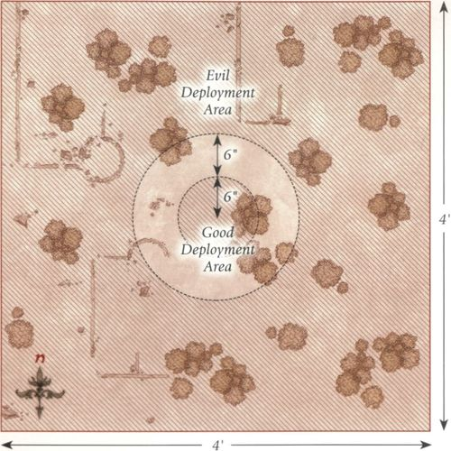
APPENDIX 3 - ARAGORN'S REVENGE
LAYOUT
The board represents the wilderness somewhere to the north of Rivendell. There should be six large areas of terrain on the board numbered 1 to 6, which can be either ruins or woods. These will be the places where the Evil player's models will be hiding. The rest of the board should have a few trees, hedges, and other undergrowth dotted around.
STARTING POSITIONS
The Good player deploys Aragorn, 3 Rangers of the North, and 3 Dunedain anywhere within 3" of the center of the southern board edge. The rest of the Good models will become available as the game progresses. The Evil player splits their force into six parts, each containing an equal number of models, and secretly assigns each part to one of the six numbered pieces of terrain. Each part may contain no more than one Hero model and no more than one Monster model.
OBJECTIVES
Consumed by rage, Aragorn will not rest until Buhrdur has been slain. The game lasts until one force has completed their objective. The Good side wins if Buhrdur is slain. The Evil side wins if Aragorn is slain. If both Buhrdur and Aragorn are slain in the same turn, the game is a draw.
SPECIAL RULES
- Tracking the Troll
When a Good model enters one of the numbered pieces of terrain for the first time, that model's move immediately ends and the Good player's Move phase is paused. The Evil player then deploys all of the models associated with that terrain piece anywhere touching that piece of terrain, but not in base contact with any Good models. Models placed in this manner may not move or shoot during the turn in which they are placed but may otherwise act normally. When all the models for a terrain piece have been placed, the Good player's Move phase is resumed.
- They're Awake!
If the roll for Priority is ever tied, randomly select one of the numbered pieces of terrain that has not yet been revealed and deploy all of the models hidden within it as per the rules stated in Tracking the Troll above.
- You Do Not Stand Alone
From the third turn onwards, at the end of each Good Move phase, the Good player may roll a D6. On a 4+, Halbarad has arrived and may move onto the board, along with 3 Rangers of the North and 3 Dunedain, from any table edge via the rules for Reinforcements. After Halbarad has arrived, the Good player will keep rolling each turn as described above. The next time a 4+ is rolled, Elladan & Elrohir will arrive, along with 3 Rangers of the North and 3 Dunedain, in the same manner as Halbarad.
- The Young Warrior
Aragorn does not have the Mighty Hero special rule in this scenario.
PARTICIPANTS
Good: Aragorn - Strider with bow; Halbarad; Elladan & Elrohir with heavy armour; 9 Rangers of the North; 9 Dunedain.
Evil: Buhrdur, Troll Chieftain; 2 Angmar Orc Captains with shield; Wild Warg Chieftain; 24 Angmar Orc Warriors: 8 with shield, 8 with spear, 4 with two-handed weapon, 4 with Orc bow; 2 Hill Trolls; 6 Wild Wargs.
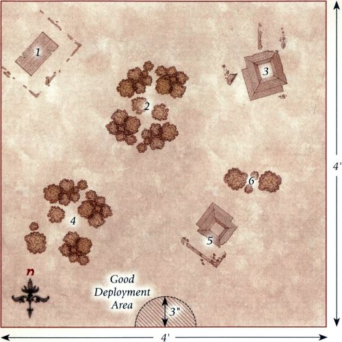
APPENDIX 4 - THE TERROR OF ARNOR
LAYOUT
The board represents the overgrown ruins of the city of Fornost. The board should be covered with plenty of ruins, trees, hedges, and undergrowth in order to create a densely packed board for models to traverse.
STARTING POSITIONS
The Evil player deploys Gulavhar in the center of the board. The Good player then deploys a Ranger of the North touching each corner of the board. All other models are kept aside for later in the game.
OBJECTIVES
Aragorn seeks to rid the northern lands of the evil that plagues them and will not rest until the creature is slain.
The game lasts until the end of a turn in which one player completes their objective. The Good player wins if Gulavhar is slain. The Evil player wins if Aragorn is slain. If both Gulavhar and Aragorn are slain in the same turn, the game is a draw.
SPECIAL RULES
- The Sound of Battle
From the second turn onwards, at the end of each player's Move phase, they roll a D3. This is the number of a player's models that may enter the board that turn. These models may be selected from any that have not yet entered the game and will enter the board from a point along any board edge chosen by the player with Priority via the rules for Reinforcements. A different point may be chosen for each model. Aragorn may not enter the board until all other Good models have done so.
- The Young Warrior
Aragorn does not have the Mighty Hero special rule in this scenario.
- Chieftain of the Dunedain
Aragorn gains the Fearless special rule in this scenario.
PARTICIPANTS
Good: Aragorn - Strider with bow; Halbarad; 6 Rangers of the North; 6 Dunedain.
Evil: Gulavhar, Terror of Arnor; 6 Dead Marsh Spectres.
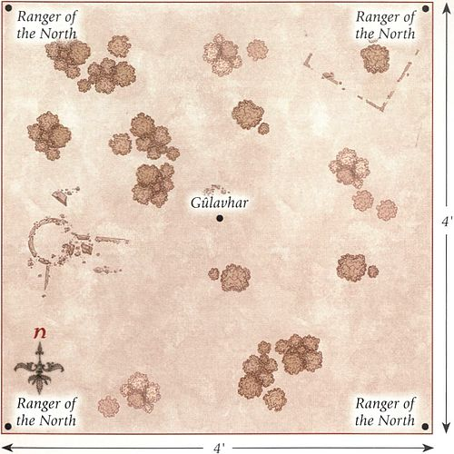